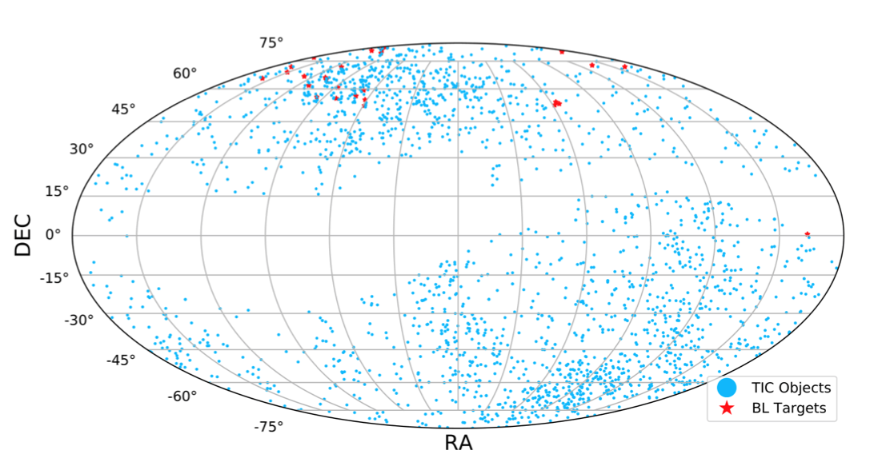
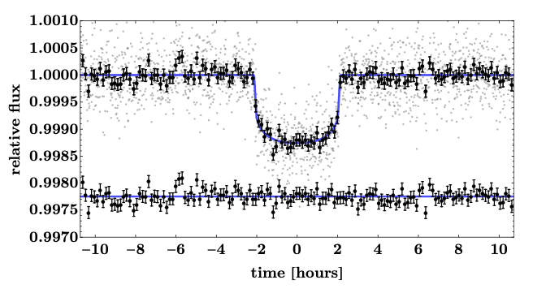

STATUS UPDATE: Sector 32 data is now on the archive and Sector 33 has started ingest.
Welcome TESS followers to this weeks news bulletin! This week we present three papers from the archive, enjoy!
The Breakthrough Listen Search for Intelligent Life: Searching for Technosignatures in Observations of TESS Targets of Interest (Traas et. al., 2021):
Exoplanets are key targets for the Search for Extraterrestrial Intelligence (SETI), and missions like TESS have significantly increased the number of planet candidates detected. It is thanks to missions like TESS that we now know that Earth-like planets are common place.
In this paper the authors expand upon the Breakthrough Listen (BL) search for extragalactic intelligence by including potential planet hosts identified by TESS. In total 28 targets, with signatures of transiting planets, were selected and 113 30-min cadence data examined. These data were searched for narrowband signals from 1-11 GHz using a modified version of the turboSETI pipeline architecture. Drift rates of +/- 4 Hzs-1 above a minimum signal-to-noise threshold of 10 were then searched for, following the parameters established in Price et al. (2020) and Enriquez et al. (2017).
The work conducted in this paper has established some of the deepest limits to date over such a wide band (1-11 GHz), for life beyond Earth.
A sub-Neptune and a non-transiting Neptune-mass companion unveiled by ESPRESSO around the bright late-F dwarf HD 5278 (TOI-130) (Sozzetti et. al., 2021):
HD 5278 also known as TOI-130, is a nearby, bright, late F-type star with a transiting sub-Neptune planet (TOI-130b) in a 14.3 day orbital period. Utilizing 43 high-resolution spectra from ESPRESSO, in addition to broad-band photometry, the authors derive accurate stellar atmospheric and physical parameters. The TESS light curve in addition to spectroscopic diagnostics are used to determine the impact of stellar activity on the ESPRESSO radial velocities (RVs).
Using a fully Bayesian framework, a joint ESPRESSO RVs + TESS LC analysis was conducted enabling the calculation of system parameters. The newly derived stellar parameters of HD 5278 are Teff = 6203 K, log g = 4.50 dex, [Fe/H] = −0.12 dex, M⋆ = 1.126 M⊙ and R⋆ = 1.194 R⊙. The mass of HD 5278 b was calculated as Mb = 7.8 M⊕ and Rb = 2.45 R⊕. The derived mean density of the planet is 2.9 gcm−3, consistent with a bulk composition with a substantial (∼30%) water mass fraction, and a gas envelope comprising ∼17% of the measured radius.
The authors also discovered a second, non-transiting companion in the system, which has a period 40.87 days and a minimum mass Mc sin ic of 18.4 M⊕. See this fascinating paper for more information.
Validation of HD 183579b using archival radial velocities: a warm-neptune orbiting a bright solar analog (Palatnick et. al., 2021)
Utilizing archival radial velocity measurements in addition to TESS observations, the authors of this paper have identified 18 single planet candidate systems.
Of the 18 systems investigated one exhibits an RV signature that has the correct period and phase matching the transiting planetary candidate, with a false alarm probability of less than 1%! After further analysis the authors validate the object, known as HD 183579b (TOI-1055b), a planet with a radii less than 4 REarth. This planet is amongst the most accessible small transiting planets for atmospheric characterization.

Fig 1. Taken from Traas et. al., (2021). Distribution of BL targets analyzed (red), and a subset of existing TIC sources with associated TOI objects in equatorial coordinates (blue). The subset was collected from resources provided by ExoFOP-TESS.

Fig 2. Taken from Palatnick et. al., (2021). Phase-folded transit light curve of HD 183579b (TOI-1055b) as observed by TESS. The black points represent the method marginalized de-trended 2-minute TESS photometry, and the red line shows the maximum a-posteriori fit from the regressions. The lower panel shows the residuals between the two.